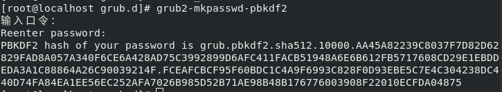

GRUB2为其菜单和终端提供了基本的密码保护。用户可以设置密码用来保护整个菜单，或者某个菜单项。可以设置多个用户，并且为每个用户提供不同的密码，密码可以以加密或非加密格式存储。本文对为什么要使用GRUB2的密码保护功能以及如何设置GRUB2进行简单介绍。
为什么要对GRUB2进行密码保护
下面是为什么要对GRUB2设置密码保护的一些原因：
1、防止访问单用户模式 - 如果攻击者可以启动到单用户模式，他将成为root用户。
2、防止访问GRUB控制台 - 如果计算机使用GRUB作为引导加载程序，则攻击者可以使用GRUB编辑器界面更改其配置或使用GRUB的控制台收集计算机信息。
3、防止访问非安全操作系统 - 如果是双引导系统，攻击者可以在引导时选择其他操作系统，忽略原有系统文件访问控制权限。
如何对GRUB2设置密码保护
设置用户和用户密码
要启用GRUB2的密码保护，必须要在GURB2中设置超级用户。超级用户可以选择所有的菜单项，可以修改所有菜单项的启动参数，也能够访问GRUB2的控制台。
1、设置超级用户1
set superusers="root"
2、设置超级用户以及超级用户的密码1
2
3
4 明文密码
password root 123123
使用grub-mkpasswd-pbkdf2加密的密码(推荐使用)
password_pbkdf2 root grub.pbkdf2.sha512.10000.AA45A82239C8037F7D82D62829FAD8A057A340F6CE6A428AD75C3992899D6AFC411FACB51948A6E6B612FB5717608CD29E1EBDDEDA3A1C88864A26C90039214F.FCEAFCBCF95F60BDC1C4A9F6993C828F0D93EBE5C7E4C304238DC440D74FA84EA1EE56EC252AFA7026B985D52B71AE98B48B176776003908F22010ECFDA04875

3、添加更多用户。添加更多用户和密码的方式同添加超级用户和超级密码，例如：
1 | 使用明文密码: |
4、使用管理员权限修改/etc/grub.d/00_header，在文件结尾添加配置，以便后面使用update-grub将用户名，用户密码自动添加到GRUB2的菜单配置文件grub.cfg文件中。1
2
3
4
5
6
7
8[file contents truncated]
cat << EOF
set superusers="root"
password_pbkdf2 root grub.pbkdf2.sha512.10000.AA45A82239C8037F7D82D62829FAD8A057A340F6CE6A428AD75C3992899D6AFC411FACB51948A6E6B612FB5717608CD29E1EBDDEDA3A1C88864A26C90039214F.FCEAFCBCF95F60BDC1C4A9F6993C828F0D93EBE5C7E4C304238DC440D74FA84EA1EE56EC252AFA7026B985D52B71AE98B48B176776003908F22010ECFDA04875
password_pbkdf2 user1 grub.pbkdf2.sha512.10000.44522395F533787F33CA08595A2E0258D44125C8C922378B0FA37CFE25ECF7D279DF674020B445A7777077D38B688D7B09748E5B75A470C4C0EE51E96764C982.C53F9D95F2A0B440D41D860235B1DFD48611242DBCDA6912A57C41C42FB1FF71E27DA79E3778719358536D046D067B556E231A6252FB4FEAD0AEFE3B511C2E84
password_pbkdf2 user2 grub.pbkdf2.sha512.10000.4720D0227777BE2C73358704E08E3870CDDB144C53ED1B503D0499851F742B603AB6BF704DDF5AFC2A4DDEC29D05FE62C4B428D9C70651B4960EBA9F8B13A592.AB82D7D484DB8F9B7F4B2C41D497F53208FCB53E2667F5C126923B14EED684B9566920376F491D5B1CB15B04F471C99963DE8807E9C24A8FCF16338142CC73CA
password_pbkdf2 user3 grub.pbkdf2.sha512.10000.40604F82BB3B7B11B275FA0598729BE6421A8E1FD58676926707DC66DDA4A10BB50FB16CD89854EAEFBCDE73C590B7BFBA06AE757602DF020520EC3710BE0FFA.B808B103BE2DBA7C4A1960C61FD76A3BC919B9DFA4E058FB05A099C5237BC910F8CE16188CBB18989277408982FC032AA385A6BAACDA441DF6FDAE9D903496C0
EOF
若只是想保护GRUB2菜单项不被非法修改，GRUB2的控制台不被非法访问，将上面设置输入到/etc/grub.d/00_header文件中即可，所有的菜单项都可以被所有的用户访问。 要对一个或多个菜单项进行密码保护，请继续往下看。
保护GRUB2菜单项
GRUB2菜单可以包含受保护和不受保护的项目，可以通过将用户访问信息添加到菜单标题行进行保护菜单项。添加的用户访问信息主要有下面几种：
--unrestricted禁用密码保护(修改条目配置依旧需要超级用户修改)--users ""仅授权给超级用户--users user1授权给超级用户和用户user1--users user1,user2授权给超级用户和用户user1，user3
修改/etc/grub.d/10_linux和/etc/grub.d/30_os-prober文件，在menuentry后面修改对应的用户权限，例如：1
2
3
4
5
6
7
8
9 /etc/grub.d/10_linux
移除--unrestricted字段，修改为对应的权限
CLASS="--class gnu-linux --class gnu --class os --user user1 "
/etc/grub.d/30_os-prober
osx
menuentry '$(echo "${LONGNAME} $onstr" | grub_quote)' --class osx --class darwin --class os --user user1
windows
menuentry "${LONGNAME} (on ${DEVICE})" --class windows --class os --user user2
修改完成之后执行update-grub，更新grub.cfg1
sudo update-grub
使用GRUB2密码保护的注意事项
1、GRUB2的密码保护只提供了最基本的保护，防止未授权的用户通过GRUB2菜单访问操作系统，通过物理访问方式获取文件会跳过该密码保护。
2、启用密码保护后，只有指定的超级用户可以通过按“e”编辑GRUB2菜单项，或通过按“c”访问GRUB2命令行。
3、创建受密码保护的GRUB2菜单中的错误可能会导致无法系统无法启动，要恢复具有破损密码的系统，可以使用LiveCD或其他操作系统访问编辑GRUB2配置文件。
4、如果将GRUB2设置为自动启动到受密码保护的menuentry，则用户无法退出密码提示以选择另一个menuentry。在这种情况下，按住SHIFT键不会显示菜单。用户必须输入正确的用户名和密码。如果不能，配置文件将不得不通过LiveCD或其他方法来修改。
参考文章：
https://help.ubuntu.com/community/Grub2/Passwords
https://www.thegeekdiary.com/centos-rhel-7-how-to-password-protect-grub2-menu-entries/
https://access.redhat.com/documentation/en-us/red_hat_enterprise_linux/7/html/system_administrators_guide/sec-protecting_grub_2_with_a_password